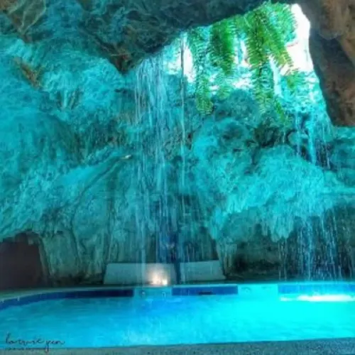
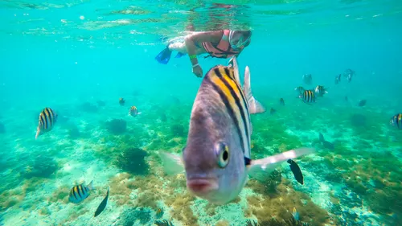
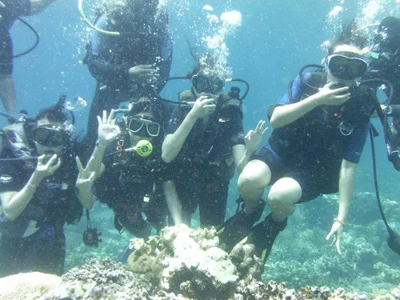
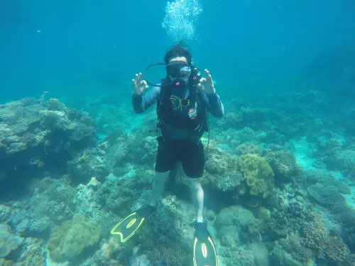

Top Snorkeling and Scuba Diving in Davao del Norte
Diving into the clear, turquoise waters of Davao del Norte offers a spectacular gateway to a vibrant underwater world. This region, blessed with pristine coastlines and rich marine ecosystems, is a burgeoning destination for snorkeling enthusiasts. From the shallow, sun-dappled reefs teeming with colorful fish to the more expansive coral gardens, the underwater landscapes provide an accessible and breathtaking experience for visitors of all ages and skill levels. Whether you're exploring the vibrant marine life around Samal Island or discovering hidden coves, snorkeling in Davao del Norte promises an unforgettable adventure beneath the waves.

Ligid Caves
Ligid Caves are a unique underwater dive site located on Samal Island in Davao, Mindanao, Philippines, featuring a system of caverns and tunnels suitable for advanced divers due to a maximum depth of 40 meters. Divers can explore fascinating rock formations and swim-throughs while encountering marine life such as schools of fish, black corals, soft corals, sponge crabs, morays, and occasionally sharks.

Isla Reta
Isla Reta Beach Resort, nestled on Talicud Island within the Island Garden City of Samal, Davao del Norte, Philippines, offers an affordable and tranquil escape. This charming resort is celebrated for its pristine white sand beach, which meets crystal-clear waters, creating an idyllic setting for relaxation and recreation. The atmosphere at Isla Reta is one of serene natural beauty and laid-back comfort, making it an ideal destination for families and friends looking to unwind and reconnect in a peaceful, nature-focused environment away from the hustle and bustle.

Carabao Dive Resort
Operated and owned by scuba divers from different professional backgrounds, with the scuba diver's need in mind. Carabao Dive Center's vision is to become the market leader in the sports of scuba diving in this part of the country by providing the best, most value-added scuba diving services and gears to our customers, while strong advocates for marine environmental conservation and protection.

Wind and Wave
Wind and Wave Davao, a premier aqua sports and diving center, has been a cornerstone of aquatic adventure since its establishment in mid-1993. Strategically located at the Fiesta Airways Hangar within the General Aviation area of the Sasa Old Airport in Davao City, it serves as a hub for diving enthusiasts and water sports aficionados. Operating as a proud subsidiary of AYP Holdings Inc., Wind and Wave Davao upholds the highest standards of safety and professionalism. Its commitment to excellence is further validated by accreditations from esteemed organizations including the Philippine Commission on Sports Scuba Diving, the Department of Tourism (DOT), and the PADI IRRA (International Resort Dive Association), ensuring a world-class experience for all its patrons.
Reference: davaodelnorte-snorkeling